# Import ModulesRead Data
import pandas as pd
import numpy as np
from dfply import *
import statsmodels.formula.api as smf
import matplotlib.pyplot as plt
import seaborn as sns
import plotly.express as pxairports = pd.read_csv('airports.csv')
flight = pd.read_csv('flights.csv')Summary
flight.head<bound method NDFrame.head of Unnamed: 0 year month day dep_time sched_dep_time dep_delay \
0 1 2013 1 1 517.0 515 2.0
1 2 2013 1 1 533.0 529 4.0
2 3 2013 1 1 542.0 540 2.0
3 4 2013 1 1 544.0 545 -1.0
4 5 2013 1 1 554.0 600 -6.0
... ... ... ... ... ... ... ...
336771 336772 2013 9 30 NaN 1455 NaN
336772 336773 2013 9 30 NaN 2200 NaN
336773 336774 2013 9 30 NaN 1210 NaN
336774 336775 2013 9 30 NaN 1159 NaN
336775 336776 2013 9 30 NaN 840 NaN
arr_time sched_arr_time arr_delay carrier flight tailnum origin \
0 830.0 819 11.0 UA 1545 N14228 EWR
1 850.0 830 20.0 UA 1714 N24211 LGA
2 923.0 850 33.0 AA 1141 N619AA JFK
3 1004.0 1022 -18.0 B6 725 N804JB JFK
4 812.0 837 -25.0 DL 461 N668DN LGA
... ... ... ... ... ... ... ...
336771 NaN 1634 NaN 9E 3393 NaN JFK
336772 NaN 2312 NaN 9E 3525 NaN LGA
336773 NaN 1330 NaN MQ 3461 N535MQ LGA
336774 NaN 1344 NaN MQ 3572 N511MQ LGA
336775 NaN 1020 NaN MQ 3531 N839MQ LGA
dest air_time distance hour minute time_hour
0 IAH 227.0 1400 5 15 2013-01-01 05:00:00
1 IAH 227.0 1416 5 29 2013-01-01 05:00:00
2 MIA 160.0 1089 5 40 2013-01-01 05:00:00
3 BQN 183.0 1576 5 45 2013-01-01 05:00:00
4 ATL 116.0 762 6 0 2013-01-01 06:00:00
... ... ... ... ... ... ...
336771 DCA NaN 213 14 55 2013-09-30 14:00:00
336772 SYR NaN 198 22 0 2013-09-30 22:00:00
336773 BNA NaN 764 12 10 2013-09-30 12:00:00
336774 CLE NaN 419 11 59 2013-09-30 11:00:00
336775 RDU NaN 431 8 40 2013-09-30 08:00:00
[336776 rows x 20 columns]>summary = flight.describe()
summary = summary.transpose()
summary.head<bound method NDFrame.head of count mean std min 25% \
Unnamed: 0 336776.0 168388.500000 97219.001466 1.0 84194.75
year 336776.0 2013.000000 0.000000 2013.0 2013.00
month 336776.0 6.548510 3.414457 1.0 4.00
day 336776.0 15.710787 8.768607 1.0 8.00
dep_time 328521.0 1349.109947 488.281791 1.0 907.00
sched_dep_time 336776.0 1344.254840 467.335756 106.0 906.00
dep_delay 328521.0 12.639070 40.210061 -43.0 -5.00
arr_time 328063.0 1502.054999 533.264132 1.0 1104.00
sched_arr_time 336776.0 1536.380220 497.457142 1.0 1124.00
arr_delay 327346.0 6.895377 44.633292 -86.0 -17.00
flight 336776.0 1971.923620 1632.471938 1.0 553.00
air_time 327346.0 150.686460 93.688305 20.0 82.00
distance 336776.0 1039.912604 733.233033 17.0 502.00
hour 336776.0 13.180247 4.661316 1.0 9.00
minute 336776.0 26.230100 19.300846 0.0 8.00
50% 75% max
Unnamed: 0 168388.5 252582.25 336776.0
year 2013.0 2013.00 2013.0
month 7.0 10.00 12.0
day 16.0 23.00 31.0
dep_time 1401.0 1744.00 2400.0
sched_dep_time 1359.0 1729.00 2359.0
dep_delay -2.0 11.00 1301.0
arr_time 1535.0 1940.00 2400.0
sched_arr_time 1556.0 1945.00 2359.0
arr_delay -5.0 14.00 1272.0
flight 1496.0 3465.00 8500.0
air_time 129.0 192.00 695.0
distance 872.0 1389.00 4983.0
hour 13.0 17.00 23.0
minute 29.0 44.00 59.0 >Data Handeling
# Select
(flight >>
select(X.origin, X.dest, X.hour) >>
head()
)| origin | dest | hour | |
|---|---|---|---|
| 0 | EWR | IAH | 5 |
| 1 | LGA | IAH | 5 |
| 2 | JFK | MIA | 5 |
| 3 | JFK | BQN | 5 |
| 4 | LGA | ATL | 6 |
# Drop
(flight >>
drop(X.year, X.month, X.day) >>
head()
)| Unnamed: 0 | dep_time | sched_dep_time | dep_delay | arr_time | sched_arr_time | arr_delay | carrier | flight | tailnum | origin | dest | air_time | distance | hour | minute | time_hour | |
|---|---|---|---|---|---|---|---|---|---|---|---|---|---|---|---|---|---|
| 0 | 1 | 517.0 | 515 | 2.0 | 830.0 | 819 | 11.0 | UA | 1545 | N14228 | EWR | IAH | 227.0 | 1400 | 5 | 15 | 2013-01-01 05:00:00 |
| 1 | 2 | 533.0 | 529 | 4.0 | 850.0 | 830 | 20.0 | UA | 1714 | N24211 | LGA | IAH | 227.0 | 1416 | 5 | 29 | 2013-01-01 05:00:00 |
| 2 | 3 | 542.0 | 540 | 2.0 | 923.0 | 850 | 33.0 | AA | 1141 | N619AA | JFK | MIA | 160.0 | 1089 | 5 | 40 | 2013-01-01 05:00:00 |
| 3 | 4 | 544.0 | 545 | -1.0 | 1004.0 | 1022 | -18.0 | B6 | 725 | N804JB | JFK | BQN | 183.0 | 1576 | 5 | 45 | 2013-01-01 05:00:00 |
| 4 | 5 | 554.0 | 600 | -6.0 | 812.0 | 837 | -25.0 | DL | 461 | N668DN | LGA | ATL | 116.0 | 762 | 6 | 0 | 2013-01-01 06:00:00 |
# Select
(flight >>
select(~X.hour, ~X.minute)
)| Unnamed: 0 | year | month | day | dep_time | sched_dep_time | dep_delay | arr_time | sched_arr_time | arr_delay | carrier | flight | tailnum | origin | dest | air_time | distance | time_hour | |
|---|---|---|---|---|---|---|---|---|---|---|---|---|---|---|---|---|---|---|
| 0 | 1 | 2013 | 1 | 1 | 517.0 | 515 | 2.0 | 830.0 | 819 | 11.0 | UA | 1545 | N14228 | EWR | IAH | 227.0 | 1400 | 2013-01-01 05:00:00 |
| 1 | 2 | 2013 | 1 | 1 | 533.0 | 529 | 4.0 | 850.0 | 830 | 20.0 | UA | 1714 | N24211 | LGA | IAH | 227.0 | 1416 | 2013-01-01 05:00:00 |
| 2 | 3 | 2013 | 1 | 1 | 542.0 | 540 | 2.0 | 923.0 | 850 | 33.0 | AA | 1141 | N619AA | JFK | MIA | 160.0 | 1089 | 2013-01-01 05:00:00 |
| 3 | 4 | 2013 | 1 | 1 | 544.0 | 545 | -1.0 | 1004.0 | 1022 | -18.0 | B6 | 725 | N804JB | JFK | BQN | 183.0 | 1576 | 2013-01-01 05:00:00 |
| 4 | 5 | 2013 | 1 | 1 | 554.0 | 600 | -6.0 | 812.0 | 837 | -25.0 | DL | 461 | N668DN | LGA | ATL | 116.0 | 762 | 2013-01-01 06:00:00 |
| ... | ... | ... | ... | ... | ... | ... | ... | ... | ... | ... | ... | ... | ... | ... | ... | ... | ... | ... |
| 336771 | 336772 | 2013 | 9 | 30 | NaN | 1455 | NaN | NaN | 1634 | NaN | 9E | 3393 | NaN | JFK | DCA | NaN | 213 | 2013-09-30 14:00:00 |
| 336772 | 336773 | 2013 | 9 | 30 | NaN | 2200 | NaN | NaN | 2312 | NaN | 9E | 3525 | NaN | LGA | SYR | NaN | 198 | 2013-09-30 22:00:00 |
| 336773 | 336774 | 2013 | 9 | 30 | NaN | 1210 | NaN | NaN | 1330 | NaN | MQ | 3461 | N535MQ | LGA | BNA | NaN | 764 | 2013-09-30 12:00:00 |
| 336774 | 336775 | 2013 | 9 | 30 | NaN | 1159 | NaN | NaN | 1344 | NaN | MQ | 3572 | N511MQ | LGA | CLE | NaN | 419 | 2013-09-30 11:00:00 |
| 336775 | 336776 | 2013 | 9 | 30 | NaN | 840 | NaN | NaN | 1020 | NaN | MQ | 3531 | N839MQ | LGA | RDU | NaN | 431 | 2013-09-30 08:00:00 |
336776 rows × 18 columns
# Filtering
(flight >>
mask(X.month == 1, X.day == 1, X.origin == 'JFK', X.hour > 10) >>
head())| Unnamed: 0 | year | month | day | dep_time | sched_dep_time | dep_delay | arr_time | sched_arr_time | arr_delay | carrier | flight | tailnum | origin | dest | air_time | distance | hour | minute | time_hour | |
|---|---|---|---|---|---|---|---|---|---|---|---|---|---|---|---|---|---|---|---|---|
| 151 | 152 | 2013 | 1 | 1 | 848.0 | 1835 | 853.0 | 1001.0 | 1950 | 851.0 | MQ | 3944 | N942MQ | JFK | BWI | 41.0 | 184 | 18 | 35 | 2013-01-01 18:00:00 |
| 258 | 259 | 2013 | 1 | 1 | 1059.0 | 1100 | -1.0 | 1210.0 | 1215 | -5.0 | MQ | 3792 | N509MQ | JFK | DCA | 50.0 | 213 | 11 | 0 | 2013-01-01 11:00:00 |
| 265 | 266 | 2013 | 1 | 1 | 1111.0 | 1115 | -4.0 | 1222.0 | 1226 | -4.0 | B6 | 24 | N279JB | JFK | BTV | 52.0 | 266 | 11 | 15 | 2013-01-01 11:00:00 |
| 266 | 267 | 2013 | 1 | 1 | 1112.0 | 1100 | 12.0 | 1440.0 | 1438 | 2.0 | UA | 285 | N517UA | JFK | SFO | 364.0 | 2586 | 11 | 0 | 2013-01-01 11:00:00 |
| 272 | 273 | 2013 | 1 | 1 | 1124.0 | 1100 | 24.0 | 1435.0 | 1431 | 4.0 | B6 | 641 | N590JB | JFK | SFO | 349.0 | 2586 | 11 | 0 | 2013-01-01 11:00:00 |
# Arrange (ascending)
(flight >>
arrange(X.distance, X.hour) >>
head()
)| Unnamed: 0 | year | month | day | dep_time | sched_dep_time | dep_delay | arr_time | sched_arr_time | arr_delay | carrier | flight | tailnum | origin | dest | air_time | distance | hour | minute | time_hour | |
|---|---|---|---|---|---|---|---|---|---|---|---|---|---|---|---|---|---|---|---|---|
| 275945 | 275946 | 2013 | 7 | 27 | NaN | 106 | NaN | NaN | 245 | NaN | US | 1632 | NaN | EWR | LGA | NaN | 17 | 1 | 6 | 2013-07-27 01:00:00 |
| 3083 | 3084 | 2013 | 1 | 4 | 1240.0 | 1200 | 40.0 | 1333.0 | 1306 | 27.0 | EV | 4193 | N14972 | EWR | PHL | 30.0 | 80 | 12 | 0 | 2013-01-04 12:00:00 |
| 3901 | 3902 | 2013 | 1 | 5 | 1155.0 | 1200 | -5.0 | 1241.0 | 1306 | -25.0 | EV | 4193 | N14902 | EWR | PHL | 29.0 | 80 | 12 | 0 | 2013-01-05 12:00:00 |
| 3426 | 3427 | 2013 | 1 | 4 | 1829.0 | 1615 | 134.0 | 1937.0 | 1721 | 136.0 | EV | 4502 | N15983 | EWR | PHL | 28.0 | 80 | 16 | 15 | 2013-01-04 16:00:00 |
| 10235 | 10236 | 2013 | 1 | 12 | 1613.0 | 1617 | -4.0 | 1708.0 | 1722 | -14.0 | EV | 4616 | N11150 | EWR | PHL | 36.0 | 80 | 16 | 17 | 2013-01-12 16:00:00 |
# Arrange (Decending)
(flight >>
arrange(X.distance, X.hour, ascending=False) >>
head()
)| Unnamed: 0 | year | month | day | dep_time | sched_dep_time | dep_delay | arr_time | sched_arr_time | arr_delay | carrier | flight | tailnum | origin | dest | air_time | distance | hour | minute | time_hour | |
|---|---|---|---|---|---|---|---|---|---|---|---|---|---|---|---|---|---|---|---|---|
| 28259 | 28260 | 2013 | 10 | 2 | 951.0 | 1000 | -9.0 | 1438.0 | 1450 | -12.0 | HA | 51 | N381HA | JFK | HNL | 623.0 | 4983 | 10 | 0 | 2013-10-02 10:00:00 |
| 30229 | 30230 | 2013 | 10 | 4 | 954.0 | 1000 | -6.0 | 1438.0 | 1450 | -12.0 | HA | 51 | N380HA | JFK | HNL | 618.0 | 4983 | 10 | 0 | 2013-10-04 10:00:00 |
| 31157 | 31158 | 2013 | 10 | 5 | 1002.0 | 1000 | 2.0 | 1418.0 | 1450 | -32.0 | HA | 51 | N384HA | JFK | HNL | 593.0 | 4983 | 10 | 0 | 2013-10-05 10:00:00 |
| 31850 | 31851 | 2013 | 10 | 6 | 958.0 | 1000 | -2.0 | 1415.0 | 1450 | -35.0 | HA | 51 | N389HA | JFK | HNL | 601.0 | 4983 | 10 | 0 | 2013-10-06 10:00:00 |
| 32842 | 32843 | 2013 | 10 | 7 | 957.0 | 1000 | -3.0 | 1504.0 | 1450 | 14.0 | HA | 51 | N390HA | JFK | HNL | 642.0 | 4983 | 10 | 0 | 2013-10-07 10:00:00 |
# Mutate
(flight >>
mutate(
new_distance = X.distance / 1000,
carrier_origin = X.carrier + X.origin) >>
head())| Unnamed: 0 | year | month | day | dep_time | sched_dep_time | dep_delay | arr_time | sched_arr_time | arr_delay | ... | tailnum | origin | dest | air_time | distance | hour | minute | time_hour | new_distance | carrier_origin | |
|---|---|---|---|---|---|---|---|---|---|---|---|---|---|---|---|---|---|---|---|---|---|
| 0 | 1 | 2013 | 1 | 1 | 517.0 | 515 | 2.0 | 830.0 | 819 | 11.0 | ... | N14228 | EWR | IAH | 227.0 | 1400 | 5 | 15 | 2013-01-01 05:00:00 | 1.400 | UAEWR |
| 1 | 2 | 2013 | 1 | 1 | 533.0 | 529 | 4.0 | 850.0 | 830 | 20.0 | ... | N24211 | LGA | IAH | 227.0 | 1416 | 5 | 29 | 2013-01-01 05:00:00 | 1.416 | UALGA |
| 2 | 3 | 2013 | 1 | 1 | 542.0 | 540 | 2.0 | 923.0 | 850 | 33.0 | ... | N619AA | JFK | MIA | 160.0 | 1089 | 5 | 40 | 2013-01-01 05:00:00 | 1.089 | AAJFK |
| 3 | 4 | 2013 | 1 | 1 | 544.0 | 545 | -1.0 | 1004.0 | 1022 | -18.0 | ... | N804JB | JFK | BQN | 183.0 | 1576 | 5 | 45 | 2013-01-01 05:00:00 | 1.576 | B6JFK |
| 4 | 5 | 2013 | 1 | 1 | 554.0 | 600 | -6.0 | 812.0 | 837 | -25.0 | ... | N668DN | LGA | ATL | 116.0 | 762 | 6 | 0 | 2013-01-01 06:00:00 | 0.762 | DLLGA |
5 rows × 22 columns
# Group by
(flight >>
group_by(X.origin)
)| Unnamed: 0 | year | month | day | dep_time | sched_dep_time | dep_delay | arr_time | sched_arr_time | arr_delay | carrier | flight | tailnum | origin | dest | air_time | distance | hour | minute | time_hour | |
|---|---|---|---|---|---|---|---|---|---|---|---|---|---|---|---|---|---|---|---|---|
| 0 | 1 | 2013 | 1 | 1 | 517.0 | 515 | 2.0 | 830.0 | 819 | 11.0 | UA | 1545 | N14228 | EWR | IAH | 227.0 | 1400 | 5 | 15 | 2013-01-01 05:00:00 |
| 1 | 2 | 2013 | 1 | 1 | 533.0 | 529 | 4.0 | 850.0 | 830 | 20.0 | UA | 1714 | N24211 | LGA | IAH | 227.0 | 1416 | 5 | 29 | 2013-01-01 05:00:00 |
| 2 | 3 | 2013 | 1 | 1 | 542.0 | 540 | 2.0 | 923.0 | 850 | 33.0 | AA | 1141 | N619AA | JFK | MIA | 160.0 | 1089 | 5 | 40 | 2013-01-01 05:00:00 |
| 3 | 4 | 2013 | 1 | 1 | 544.0 | 545 | -1.0 | 1004.0 | 1022 | -18.0 | B6 | 725 | N804JB | JFK | BQN | 183.0 | 1576 | 5 | 45 | 2013-01-01 05:00:00 |
| 4 | 5 | 2013 | 1 | 1 | 554.0 | 600 | -6.0 | 812.0 | 837 | -25.0 | DL | 461 | N668DN | LGA | ATL | 116.0 | 762 | 6 | 0 | 2013-01-01 06:00:00 |
| ... | ... | ... | ... | ... | ... | ... | ... | ... | ... | ... | ... | ... | ... | ... | ... | ... | ... | ... | ... | ... |
| 336771 | 336772 | 2013 | 9 | 30 | NaN | 1455 | NaN | NaN | 1634 | NaN | 9E | 3393 | NaN | JFK | DCA | NaN | 213 | 14 | 55 | 2013-09-30 14:00:00 |
| 336772 | 336773 | 2013 | 9 | 30 | NaN | 2200 | NaN | NaN | 2312 | NaN | 9E | 3525 | NaN | LGA | SYR | NaN | 198 | 22 | 0 | 2013-09-30 22:00:00 |
| 336773 | 336774 | 2013 | 9 | 30 | NaN | 1210 | NaN | NaN | 1330 | NaN | MQ | 3461 | N535MQ | LGA | BNA | NaN | 764 | 12 | 10 | 2013-09-30 12:00:00 |
| 336774 | 336775 | 2013 | 9 | 30 | NaN | 1159 | NaN | NaN | 1344 | NaN | MQ | 3572 | N511MQ | LGA | CLE | NaN | 419 | 11 | 59 | 2013-09-30 11:00:00 |
| 336775 | 336776 | 2013 | 9 | 30 | NaN | 840 | NaN | NaN | 1020 | NaN | MQ | 3531 | N839MQ | LGA | RDU | NaN | 431 | 8 | 40 | 2013-09-30 08:00:00 |
336776 rows × 20 columns
# Group by and summarize
(flight >>
group_by(X.origin) >>
summarize(mean_distance = X.distance.mean())
)| origin | mean_distance | |
|---|---|---|
| 0 | EWR | 1056.742790 |
| 1 | JFK | 1266.249077 |
| 2 | LGA | 779.835671 |
#Bringing it together with pipes
#[Step 1]: Filter out all flights less than 10 hours
#[Step 2]: Create a new column, speed, using the formula [distance / (air time * 60)]
#[Step 3]: Calculate the mean speed for flights originating from each airport
#[Step 4]: Sort the result by mean speed in descending order
(flight >>
mask(X.hour > 10) >> # step 1
mutate(speed = X.distance / (X.air_time * 60)) >> # step 2
group_by(X.origin) >> # step 3a
summarize(mean_speed = X.speed.mean()) >> # step 3b
arrange(X.mean_speed, ascending=False) # step 4
)| origin | mean_speed | |
|---|---|---|
| 0 | EWR | 0.109777 |
| 1 | JFK | 0.109427 |
| 2 | LGA | 0.107362 |
flight.loc[flight['hour'] > 10, 'speed'] = flight['distance'] / (flight['air_time'] * 60)
result = flight.groupby('origin', as_index=False)['speed'].mean()
result.sort_values('speed', ascending=False)| origin | speed | |
|---|---|---|
| 0 | EWR | 0.109777 |
| 1 | JFK | 0.109427 |
| 2 | LGA | 0.107362 |
Basic Stat
df = pd.read_csv("MELBOURNE_HOUSE_PRICES_LESS.csv")
df.head()| Suburb | Address | Rooms | Type | Price | Method | SellerG | Date | Postcode | Regionname | Propertycount | Distance | CouncilArea | |
|---|---|---|---|---|---|---|---|---|---|---|---|---|---|
| 0 | Abbotsford | 49 Lithgow St | 3 | h | 1490000.0 | S | Jellis | 1/04/2017 | 3067 | Northern Metropolitan | 4019 | 3.0 | Yarra City Council |
| 1 | Abbotsford | 59A Turner St | 3 | h | 1220000.0 | S | Marshall | 1/04/2017 | 3067 | Northern Metropolitan | 4019 | 3.0 | Yarra City Council |
| 2 | Abbotsford | 119B Yarra St | 3 | h | 1420000.0 | S | Nelson | 1/04/2017 | 3067 | Northern Metropolitan | 4019 | 3.0 | Yarra City Council |
| 3 | Aberfeldie | 68 Vida St | 3 | h | 1515000.0 | S | Barry | 1/04/2017 | 3040 | Western Metropolitan | 1543 | 7.5 | Moonee Valley City Council |
| 4 | Airport West | 92 Clydesdale Rd | 2 | h | 670000.0 | S | Nelson | 1/04/2017 | 3042 | Western Metropolitan | 3464 | 10.4 | Moonee Valley City Council |
df.info()<class 'pandas.core.frame.DataFrame'>
RangeIndex: 63023 entries, 0 to 63022
Data columns (total 13 columns):
# Column Non-Null Count Dtype
--- ------ -------------- -----
0 Suburb 63023 non-null object
1 Address 63023 non-null object
2 Rooms 63023 non-null int64
3 Type 63023 non-null object
4 Price 48433 non-null float64
5 Method 63023 non-null object
6 SellerG 63023 non-null object
7 Date 63023 non-null object
8 Postcode 63023 non-null int64
9 Regionname 63023 non-null object
10 Propertycount 63023 non-null int64
11 Distance 63023 non-null float64
12 CouncilArea 63023 non-null object
dtypes: float64(2), int64(3), object(8)
memory usage: 6.3+ MBaverage = df['Price'].mean()
print(average)
med = df['Price'].median()
print(med)
standard_deviation = df['Price'].std()
print(standard_deviation)997898.2414882415
830000.0
593498.9190372769%matplotlib inline
sns.set(style="whitegrid")
plt.figure(figsize=(10,8))
ax = sns.boxplot(y='Price', data=df, orient="v")
ax = sns.boxplot(x='Type', y='Price', data=df, orient="v")
filter_data = df.dropna(subset=['Price'])
plt.figure(figsize=(14,8))
sns.distplot(filter_data['Price'], kde=False)
type_counts = df['Type'].value_counts()
df2 = pd.DataFrame({'house_type': type_counts},
index = ['t', 'h', 'u']
)
df2.plot.pie(y='house_type', figsize=(10,10), autopct='%1.1f%%')
sns.set(style='darkgrid')
plt.figure(figsize=(20,10))
ax = sns.countplot(x='Regionname', data=df)/usr/local/lib/python3.9/site-packages/seaborn/distributions.py:2557: FutureWarning:
`distplot` is a deprecated function and will be removed in a future version. Please adapt your code to use either `displot` (a figure-level function with similar flexibility) or `histplot` (an axes-level function for histograms).
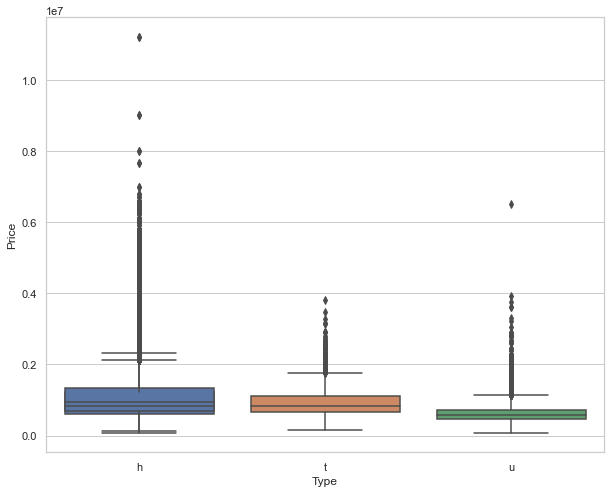
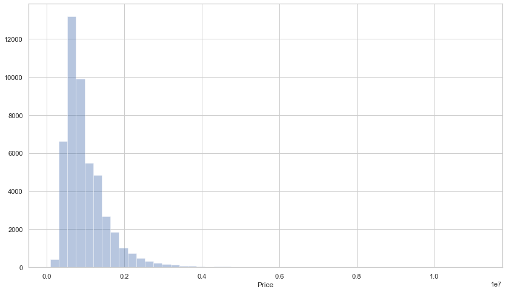
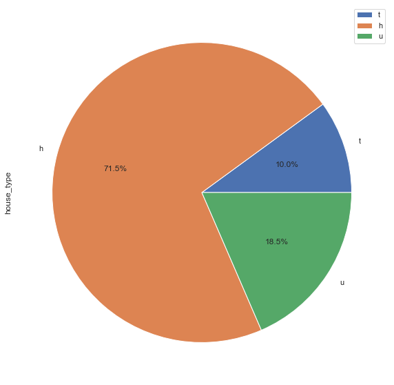
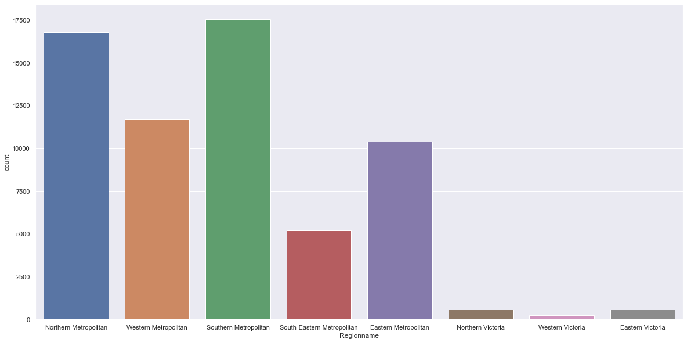
Correlation
df.corr()
pd.plotting.scatter_matrix(df, figsize=(6,6))
plt.show()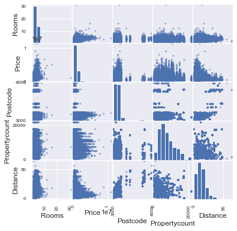
Regression
# get data
url = "http://peopleanalytics-regression-book.org/data/ugtests.csv"
ugtests = pd.read_csv(url)
sns.scatterplot(data=ugtests, x="Yr1", y="Final")
fig = px.scatter_3d(ugtests, x='Yr3', y='Final', z='Yr1')
fig.show()Unable to display output for mime type(s): application/vnd.plotly.v1+json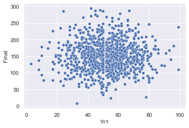
sns.histplot(data=ugtests, x = 'Yr1')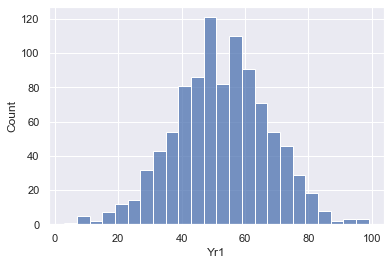
ugtests.corr()| Yr1 | Yr2 | Yr3 | Final | |
|---|---|---|---|---|
| Yr1 | 1.000000 | 0.027509 | -0.020090 | 0.020484 |
| Yr2 | 0.027509 | 1.000000 | 0.043435 | 0.321298 |
| Yr3 | -0.020090 | 0.043435 | 1.000000 | 0.666364 |
| Final | 0.020484 | 0.321298 | 0.666364 | 1.000000 |
plt.matshow(ugtests.corr())
plt.xticks(range(len(ugtests.columns)), ugtests.columns)
plt.yticks(range(len(ugtests.columns)), ugtests.columns)
plt.colorbar()
plt.show()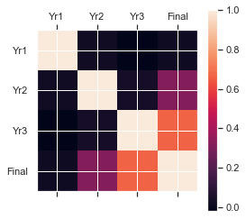
# define model
model = smf.ols(formula = "Final ~ Yr3 + Yr2 + Yr1", data = ugtests)
# fit model
ugtests_model = model.fit()
# see results summary
print(ugtests_model.summary()) OLS Regression Results
==============================================================================
Dep. Variable: Final R-squared: 0.530
Model: OLS Adj. R-squared: 0.529
Method: Least Squares F-statistic: 365.5
Date: Thu, 08 Jul 2021 Prob (F-statistic): 8.22e-159
Time: 08:20:25 Log-Likelihood: -4711.6
No. Observations: 975 AIC: 9431.
Df Residuals: 971 BIC: 9451.
Df Model: 3
Covariance Type: nonrobust
==============================================================================
coef std err t P>|t| [0.025 0.975]
------------------------------------------------------------------------------
Intercept 14.1460 5.480 2.581 0.010 3.392 24.900
Yr3 0.8657 0.029 29.710 0.000 0.809 0.923
Yr2 0.4313 0.033 13.267 0.000 0.367 0.495
Yr1 0.0760 0.065 1.163 0.245 -0.052 0.204
==============================================================================
Omnibus: 0.762 Durbin-Watson: 2.006
Prob(Omnibus): 0.683 Jarque-Bera (JB): 0.795
Skew: 0.067 Prob(JB): 0.672
Kurtosis: 2.961 Cond. No. 858.
==============================================================================
Notes:
[1] Standard Errors assume that the covariance matrix of the errors is correctly specified.sns.set_theme(color_codes=True)
tips = sns.load_dataset("tips")
sns.regplot(x="total_bill", y="tip", data=tips);
sns.lmplot(x="total_bill", y='tip', hue='smoker', data = tips);
sns.lmplot(x="total_bill", y='tip', col='sex', row='smoker', data = tips);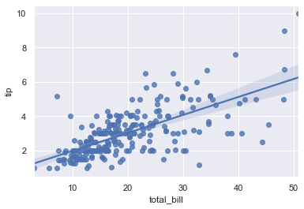
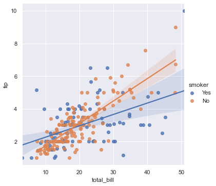
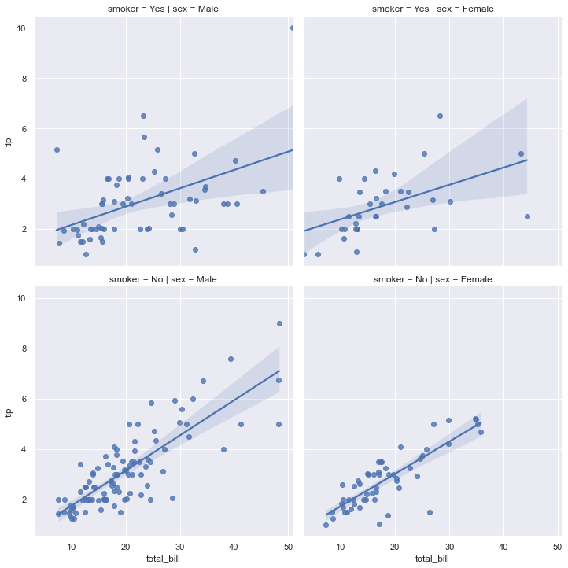
Logistic Regression
import statsmodels.api as sm
import statsmodels.formula.api as smf
# obtain salespeople data
url = "http://peopleanalytics-regression-book.org/data/salespeople.csv"
salespeople = pd.read_csv(url)
# define model
model = smf.glm(formula = "promoted ~ sales + customer_rate",
data = salespeople,
family = sm.families.Binomial())
# fit model
promotion_model = model.fit()
# see results summary
print(promotion_model.summary()) Generalized Linear Model Regression Results
==============================================================================
Dep. Variable: promoted No. Observations: 350
Model: GLM Df Residuals: 347
Model Family: Binomial Df Model: 2
Link Function: logit Scale: 1.0000
Method: IRLS Log-Likelihood: -32.566
Date: Thu, 08 Jul 2021 Deviance: 65.131
Time: 08:20:29 Pearson chi2: 198.
No. Iterations: 9
Covariance Type: nonrobust
=================================================================================
coef std err z P>|z| [0.025 0.975]
---------------------------------------------------------------------------------
Intercept -19.5177 3.347 -5.831 0.000 -26.078 -12.958
sales 0.0404 0.007 6.189 0.000 0.028 0.053
customer_rate -1.1221 0.467 -2.403 0.016 -2.037 -0.207
=================================================================================Time series
# Using graph_objects
import plotly.graph_objects as go
import pandas as pd
df = pd.read_csv('https://raw.githubusercontent.com/plotly/datasets/master/finance-charts-apple.csv')
df| Date | AAPL.Open | AAPL.High | AAPL.Low | AAPL.Close | AAPL.Volume | AAPL.Adjusted | dn | mavg | up | direction | |
|---|---|---|---|---|---|---|---|---|---|---|---|
| 0 | 2015-02-17 | 127.489998 | 128.880005 | 126.919998 | 127.830002 | 63152400 | 122.905254 | 106.741052 | 117.927667 | 129.114281 | Increasing |
| 1 | 2015-02-18 | 127.629997 | 128.779999 | 127.449997 | 128.720001 | 44891700 | 123.760965 | 107.842423 | 118.940333 | 130.038244 | Increasing |
| 2 | 2015-02-19 | 128.479996 | 129.029999 | 128.330002 | 128.449997 | 37362400 | 123.501363 | 108.894245 | 119.889167 | 130.884089 | Decreasing |
| 3 | 2015-02-20 | 128.619995 | 129.500000 | 128.050003 | 129.500000 | 48948400 | 124.510914 | 109.785449 | 120.763500 | 131.741551 | Increasing |
| 4 | 2015-02-23 | 130.020004 | 133.000000 | 129.660004 | 133.000000 | 70974100 | 127.876074 | 110.372516 | 121.720167 | 133.067817 | Increasing |
| ... | ... | ... | ... | ... | ... | ... | ... | ... | ... | ... | ... |
| 501 | 2017-02-10 | 132.460007 | 132.940002 | 132.050003 | 132.119995 | 20065500 | 132.119995 | 114.494004 | 124.498666 | 134.503328 | Decreasing |
| 502 | 2017-02-13 | 133.080002 | 133.820007 | 132.750000 | 133.289993 | 23035400 | 133.289993 | 114.820798 | 125.205166 | 135.589534 | Increasing |
| 503 | 2017-02-14 | 133.470001 | 135.089996 | 133.250000 | 135.020004 | 32815500 | 135.020004 | 115.175718 | 125.953499 | 136.731280 | Increasing |
| 504 | 2017-02-15 | 135.520004 | 136.270004 | 134.619995 | 135.509995 | 35501600 | 135.509995 | 115.545035 | 126.723499 | 137.901963 | Decreasing |
| 505 | 2017-02-16 | 135.669998 | 135.899994 | 134.839996 | 135.350006 | 22118000 | 135.350006 | 116.203299 | 127.504333 | 138.805366 | Decreasing |
506 rows × 11 columns
fig = go.Figure([go.Scatter(x=df['Date'], y=df['AAPL.High'])])
fig.show()Unable to display output for mime type(s): application/vnd.plotly.v1+jsonimport plotly.express as px
df = px.data.stocks()
fig = px.line(df, x="date", y=df.columns,
hover_data={"date": "|%B %d, %Y"},
title='custom tick labels')
fig.update_xaxes(
dtick="M1",
tickformat="%b\n%Y")
fig.show()Unable to display output for mime type(s): application/vnd.plotly.v1+json